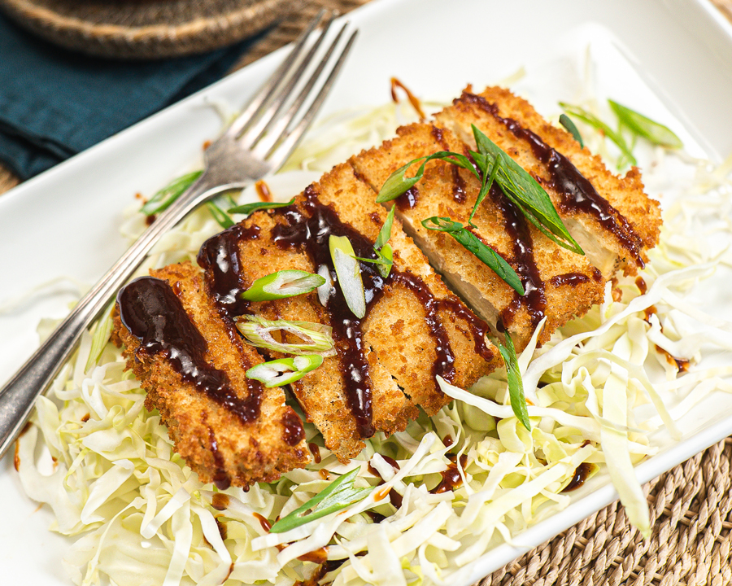

Tofu Katsu Recipe

About this recipe
A crispy treat for me!
Ingredients
- Tofu, extra firm
- Cornstarch
- Panko
- Hoisin
- Ketchup
- Garlic
- Chili
Let's Get Started
- Make the sauce by combining Hoisin, Ketchup, Garlic, and Chili
- Press Tofu to remove moisture
- Mix cornstarch and water
- Tip tofu and coat in Panko
- Fry the coated tofu
- Serve over rice with sauce